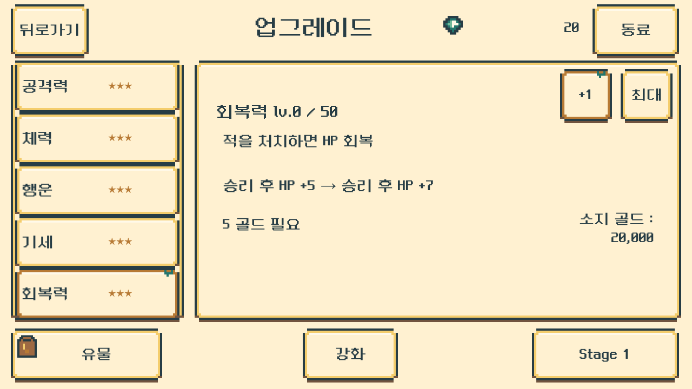
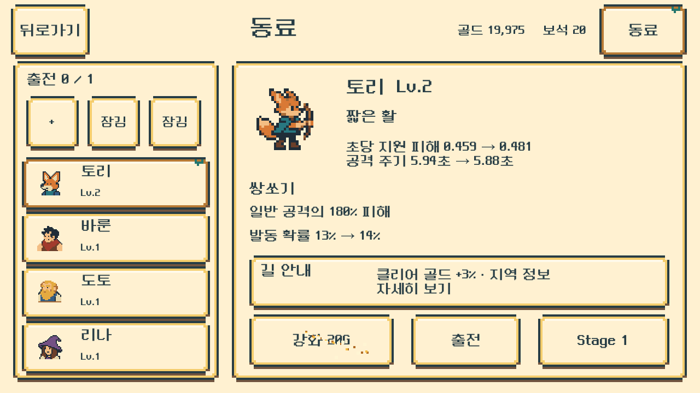
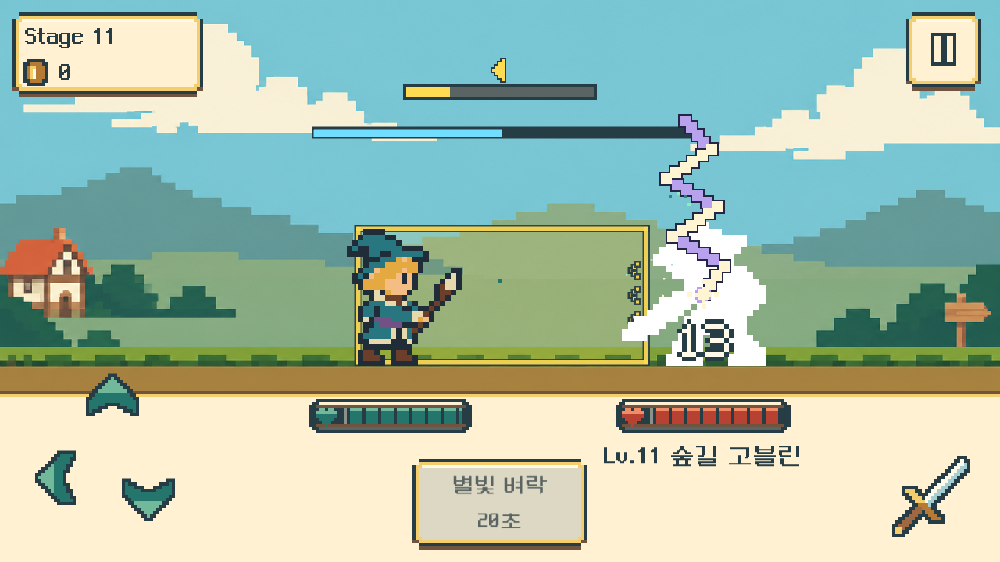
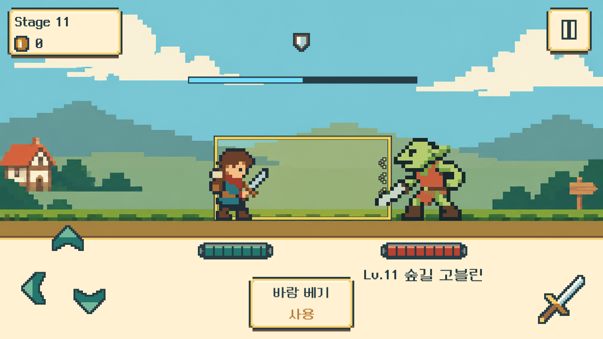
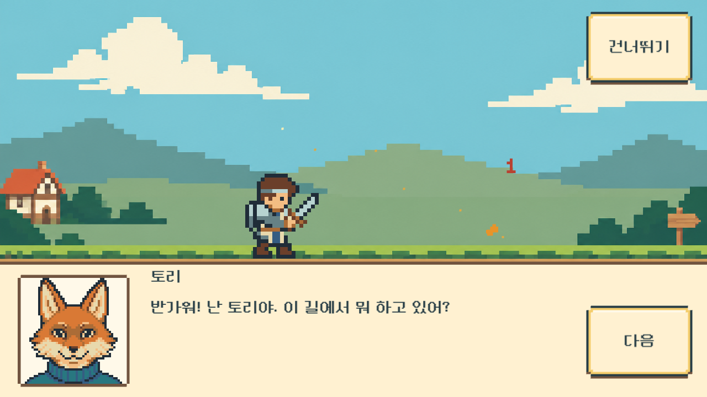
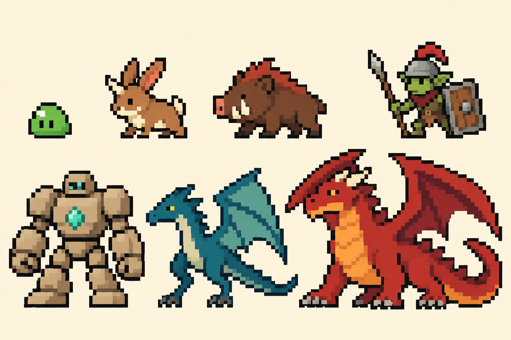
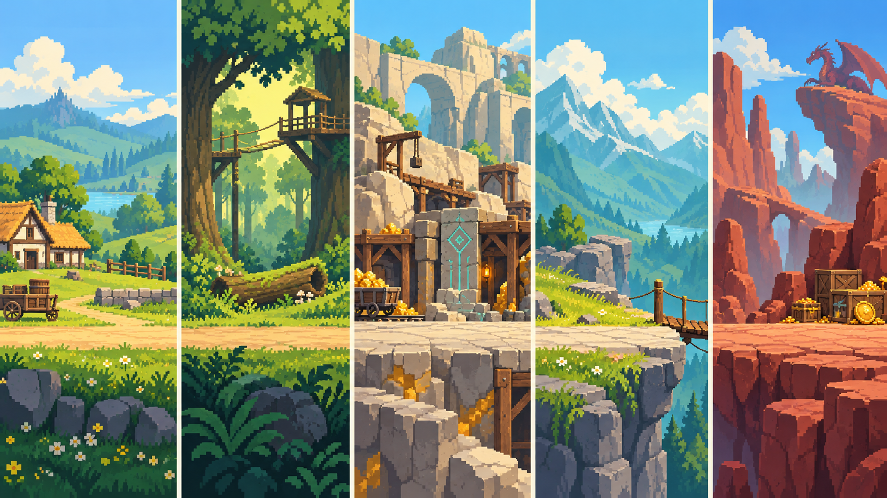

스킬을 따로 쓴다
하단 중앙 스킬은 공격·회피 중에도 사용합니다. 사용 후 0.2초에 별도 타격, 쿨타임은 20초. 미엘은 적에게 하늘 벼락을 꽂습니다.
UNITY V0.9.6 · 2026-10-25 · 적용 · 표적 QA 완료
기존 여관 강화 배치와 우상단 동료 버튼, 굵은 도트 체력바·피해 숫자, 독립 스킬과 동료 5종의 확률 스킬을 반영했습니다.
하단 중앙 스킬은 공격·회피 중에도 사용합니다. 사용 후 0.2초에 별도 타격, 쿨타임은 20초. 미엘은 적에게 하늘 벼락을 꽂습니다.
토리 쌍쏘기 · 바룬 쿵 내려찍기 · 도토 불꽃 망치 · 리나 번개 줄기 · 모모 씨앗 폭탄. 강화하면 확률과 공격 주기가 함께 좋아집니다.
하트가 달린 계단형 체력바, 굵은 외곽선의 피해 숫자와 동료의 흰색 피격 반응. 보스 체력은 상단의 긴 바로 표시합니다.



실제 Windows 관측판 원본입니다. 고레벨·보유 동료 등 검증용 상태를 사용한 화면이며, 정산·저장 복원 검증도 완료했습니다.
큰 피해(단일 실제 피해 ≥ 최대HP 1/3)는 초록 HP가 즉시 감소하고 주황 잔상이120ms 유지 후550ms 선형 보간으로 따라옵니다. 기존 변경의1280/640 관측·저장 복원과 HP 추가 표적 QA를 완료했습니다. 전체 인수·모바일 실기기 인증은 아니며 일반 배포판은 패키지 검증입니다. 현재 플레이는1~20,21~50은 후속 제작입니다. 최신 QA
UNITY · V0.9.4 · 2026-10-24
동료·회복력과 Stage5 행동 가이드, 좌우 화자 초상, 실제 도트 ParticleSystem을 저장 씬·프리팹과 Windows 실행판에 연결했습니다.
5종의 Idle·Attack·Run 15클립, 총98프레임. 새 계정은2토리·12바룬을 만나고, 이전 저장에서 이미 만난 리나·도토도 동료와 서비스를 유지합니다. 모모 아트가 있다는 사실은42스테이지 플레이 구현을 뜻하지 않습니다.
예고와 후퇴·준비·전진은 실제 적중 시각을 따릅니다. Stage5의 첫 두 타는 위 회피→아래 쳐내기의 새 입력을 확인하고, 이후 정상 속도 전투로 이어집니다.
회복력은 다섯 번째 성장 스탯입니다. 일반·중간 보스·보스 모두 처치 시 정량 회복을 한 번 적용하며, 보스 추가 완전 회복은 없습니다. 동료 편성·강화·제작·예약은 Core 견적과 확인을 거칩니다.
플레이어 발화는 왼쪽 초상과 그 오른쪽 이름표, NPC 발화는 오른쪽 초상과 왼쪽 이름표를 사용합니다. 기존9종과 모모의24px 초상을 연결했습니다. 스킬·동료 발사체·강화·축복·회복에는 실제 ParticleSystem을 사용하며, 효과는 별도 전투 판정을 만들지 않습니다.
현재 실행 범위는1~20스테이지입니다. 21~50 전투, 새 계정 도토22·리나32·모모42 첫 만남과 다음 회차는 후속 제작입니다. 기존 Dragon 저장 경로를 유지하며 새 저장만 Stage1부터 시작합니다.


승인된 변경 범위 QA · PASS WITH LIMITS. candidate02의 두 해상도 통합·재시작 4프로세스 및 영향 없는 시각 관측을 채택했습니다. candidate03에서는 바룬의 Stage12 대화만 3캐릭터·2해상도, 30페이지로 재검증해 초상화 오류를 해결 확인했습니다.
통합 기록: Core 217 assertions · 데이터 28 tests · 실제 Unity EditMode 198 passed. 이 수치는 최종 화면 campaign과 별도입니다.
최종 campaign 2개 프로세스 통과. 이 숫자는 전체 과거 후보·채택 증거의 합계가 아닙니다. 일반 배포판은 패키지 검증이며 별도 전체 플레이 통과로 확대하지 않습니다.
ADVENTURE V5 · UNITY V0.9.4 · 실행1~20 적용
24px 초상10종과 화자별 좌우 대화, Stage5 연속 공격 가이드, 후퇴 예고·회복력·여관 동료를 실제 실행판에 연결했습니다. 아래 이미지는 설계 시안이며, 실행 검증 범위는 상단 QA 기록을 따릅니다.

뒤로 물러나기 → 준비 → 타격. 현재 타격의 진행 표시를 실제 판정 시각과 맞춥니다.
보스 처치 시 완전 회복을 없애고, 다섯 번째 스탯 회복력만큼 한 번 회복합니다.
2토리 · 12바룬 · 22도토 · 32리나 · 42모모. 여관 서비스·강화와 주기적인 지원 공격을 설계했습니다.
현재 실행은1~20입니다. 새 계정 토리2·바룬12, 기존 해금 동료와 여관 서비스를 지원합니다. 21~50과 모모42 첫 만남은 후속 제작이며, 기획50층·아트98프레임과 실제 플레이 범위를 구분합니다.
게임 가칭 · 용 잡으러 갑니다
북쪽 산길에 용이 눌러앉아 마을의 수레가 끊겼다. 의뢰를 맡은 모험가는 길에서 만난 이들의 도움을 받아 숲과 광산과 고개를 지나 용을 잡으러 간다.
목표는 용과 싸워 이기고 길을 되찾는 것.
친근한 인물과 밝은 풍경 속에서 타이밍 전투의 도전성을 이어갑니다.
UNITY · V0.9.3
강한 공격 예고와 커진 기절바, 고블린 돌진, 20초 수동 스킬과 초상화 대화를 실제 게임에 연결했습니다.
저장 씬·프리팹 적용 및 Windows 배포본 제작 완료. 1280×720·640×360에서 변경 기능과 저장 복원을 확인했습니다. 11스테이지의 실제 전진 누락을 수정하고 해당 구간을 다시 확인했습니다. 모바일 실기기·OS 실입력·직접 청취는 별도 확인 대상입니다.


노란색과 짙은 경계의 예고가 타격 직전까지 유지됩니다. 기절 누적은 하늘색, 준비 완료는 노란색, 기절 중에는 민트색입니다. 11스테이지 고블린은 앞쪽으로 돌진하며 뒤 회피로 대응합니다.
루카의 바람 베기, 다렌의 철벽 반격, 미엘의 별빛 봉인. 하단 중앙 버튼으로 직접 사용하며 20초 전투 쿨타임을 공유 규칙으로 사용합니다. 캐릭터별 성장·진행은 독립입니다.
2·7·15스테이지의 첫 만남과 10·20 보스 뒤 대사, 총25페이지와 초상화9종. 선택한 주인공에 맞춰 이름·얼굴·답변이 함께 바뀝니다.
현재 플레이는 1~20스테이지입니다. 21~50과 전용 지역 배경은 후속 제작입니다. 기존 Dragon 진행을 이어가며, 저장이 없는 첫 실행은 의뢰 시작→캐릭터 선택→Stage1 튜토리얼로 진행합니다.
Core246 assertions·데이터26검사 통과. native 합성 입력과 격리 저장으로 검증했으며, 실제 모바일 터치나 음색·중복 음성의 청취 인증을 뜻하지 않습니다. 일반 배포본은 관측 코드를 제외하고 패키지 무결성을 확인했습니다.
최종 QA 범위·결과 · 완료 기준 · 적용 기록 · 배포 파일·라이선스 검증
INDEPENDENT SKILLS · V0.9.5
하단 중앙의 전용 버튼을 누르면 일반 공격·회피 중에도 사용할 수 있습니다. 0.2초 뒤 별도 타격하며, 20초의 전투 시간이 지나면 다시 쓸 수 있습니다.
공격력 160%로 베기
쿨타임 20초 · 직접 사용
적이 기절했을 때 강한 한 번을 넣거나, 다음 공격을 기다리지 않고 처치를 노립니다.
공격력 115%. 3초간 체력 8%를 1회 보호
쿨타임 20초 · 직접 사용
다음 공격을 피하기 어려울 때 1회 보호막을 준비합니다. 적중해야 생기며, 3초가 지나거나 다음 피해를 흡수하면 사라집니다.
공격력 125%. 기절 누적 +50, 보스 저항 적용
쿨타임 20초 · 직접 사용
적에게 하늘 벼락을 꽂아 기절 누적을 앞당깁니다. 일반 +50, 중간 보스 +30, 보스 +20. 100을 채우면 다음 일반 공격으로 기절을 엽니다.
처음 출전할 때 준비 완료. 같은 도전에서 다음 적을 만나도 남은 대기시간을 유지합니다. 대화·이동·일시정지 중에는 시간이 흐르지 않습니다. 누를 수 없는 상태에서는 소모하지 않으며, 일반 공격과 회피는 스킬을 취소하지 않습니다. 접촉 전에 적이나 플레이어가 쓰러지면 남은 타격은 사라지고 대기시간은 유지됩니다.
기존 세 번 충전 방식은 사용하지 않습니다. 위·뒤 회피, 아래 쳐내기, 일반 공격은 그대로 유지합니다. 현재 수치·상태 계약 · 이전 충전 방식 보관본
DIALOGUE V4 · 캐릭터의 이름과 얼굴
한 사람이 말할 때마다 이름과 초상화가 함께 바뀝니다. 루카·다렌·미엘은 같은 질문에도 각자의 말투로 답합니다. 아래는 현재 1~20스테이지에 연결하는 대사이며, 전체 여정의 30·40·50 보스 대사는 후속 기획입니다.
“반가워! 난 토리야. 이 길에서 뭐 하고 있어?”
“용을 잡으러 간다고? 멋지다! 나도 같이 갈래!”
루카 “나는 루카야. 잘 부탁해, 토리.”
다렌 “난 다렌이야. 내 뒤로 따라와. 길은 네가 알려 주고!”
미엘 “나는 미엘이야. 그럼 길 안내는 토리에게 맡길게!”
| 진행 | 만남 | 분량 | 표시 시점 |
|---|---|---|---|
| Stage 2 | 토리 · 처음 만난 길잡이 | 6페이지 | 처치 후 만남 |
| Stage 7 | 리나 · 준비를 챙기는 마법사 | 5페이지 | 처치 후 만남 |
| Stage 10 | 토리 · 숲길로 출발 | 3페이지 | 보스 뒤 |
| Stage 15 | 바룬 · 점심을 나르는 운반꾼 | 5페이지 | 처치 후 만남 |
| Stage 20 | 기블과 도토 · 광산으로 가는 길 | 6페이지 | 보스 뒤 |
토리의 첫 호출은 ???와 실루엣으로 보여 주고, 다음 줄에서 이름과 얼굴을 공개합니다. 리나·바룬·도토는 처음부터 얼굴을 보여 주되 소개 전 화자명은 ???로 표시합니다. 이름은 본문 왼쪽 위, 초상화는 왼쪽에 고정합니다. 대화 중에는 전투가 멈추며 다음과 건너뛰기로 진행합니다.
새 만남은 캐릭터별 최초 1회입니다. 대화 중 저장 후에는 같은 페이지부터 이어집니다. 만남 자체로 유물·보석·체크포인트를 더 주지 않습니다. 토리의 동행은 이야기 속 길 안내이며 동료 자동 공격은 없습니다.
새 기획 v5: 적의 후퇴 준비·Stage5 연속 공격 연습·회복력·여관 동료가 추가됩니다. 화면 시안과 전체 기획 보기 → (Unity 미적용)
READ · DEFEND · CHOOSE
방향 예고를 읽고 피한 다음, 평타와 20초 스킬 중 무엇을 지금 쓸지 고릅니다.
진한 외곽선과 노란 도트가 실제 위험 범위를 보여 줍니다. 예고 마지막까지 표시하고, 적중 직전에는 밝은 크림색으로 변합니다. 11스테이지 고블린은 정면으로 달려오며 뒤 회피로 대응합니다.
밝은 하늘색 누적이 가득 차 노란색이 되면 다음 타격으로 기절을 엽니다. 루카는 기절 뒤 큰 피해, 다렌은 다음 실수를 완충할 보호막, 미엘은 기절 준비를 앞당기는 누적이 강점입니다.
적을 쓰러뜨리며 앞으로 달리고, 토리·리나·바룬·도토와 짧은 말을 나눕니다. 목표는 산길을 막은 용을 혼내주는 것. 이름·표정·말투로 동행하는 인물의 성격을 보여 줍니다.
이 조합을 이 게임의 중심 경험으로 삼습니다. 시장 최초나 다른 게임에 없는 규칙이라고 주장하지 않습니다. 현재 플레이 구간은 1~20이며, 21~50의 지역과 마지막 용 전투는 후속 제작입니다.
GROUND · MOTION CONTACT
풀 끝에 떠 있거나 바닥에 파묻히지 않도록, 지면과 양쪽 캐릭터가 하나의 접지 기준을 사용합니다. 보스도 발을 기준으로 위쪽으로 커집니다.
| 스테이지 | 지역 | 바닥 정의 | 아트 적용 범위 |
|---|---|---|---|
| 1–10 | 바람들판 | 다져진 황토길과 짧은 풀 가장자리 | 기존 초원 바닥 적용 |
| 11–20 | 솔바람숲 | 단단한 숲 흙길과 이끼 가장자리 | 기존 바닥의 숲 색조 적용; 전용 숲 배경은 후속 |
| 21–30 | 햇돌광산 | 평평하게 다진 회갈색 돌바닥 | 기획 · 전용 지형 아트 미구현 |
| 31–40 | 구름고개 | 밝은 회색 바위길과 짧은 고산 풀 | 기획 · 전용 지형 아트 미구현 |
| 41–50 | 붉은바위둥지 | 크림빛 암반과 붉은 지층 단면 | 기획 · 전용 지형 아트 미구현 |
클립의 발 피벗과 공통 지면을 맞춥니다. 지지발이 버티고, 손과 무기가 연결된 채 준비→접촉→복귀가 읽혀야 합니다.
접지와 공중 자세를 구분합니다. 프레임마다 발을 바닥으로 끌어내리지 않습니다. 플레이어 X 고정, 지면·원경 이동으로 전진감을 줍니다.
보스 크기와 얼굴 포효 기준을 따로 관리합니다. 바닥에서 나오는 가시도 같은 접지선에서 시작하며, 그림 장식이 판정을 바꾸지 않습니다.
1–20은 현재 실행 범위,21–50은 후속 계획입니다. 개별 바닥 장식은 제작 지시이며50장의 별도 배경이 완성됐다는 뜻이 아닙니다.
| 스테이지 | 적 | 바닥 장식 계획 | 접지 기준 | 진행 |
|---|---|---|---|---|
| Stage 1 | 오솔길 슬라임 | 마을 밖 흙길 | 590 · 평면 | 실행 구간 |
| Stage 2 | 풀잎 슬라임 | 풀잎 둔덕 옆 흙길 | 590 · 평면 | 실행 구간 |
| Stage 3 | 뿔토끼 | 돌울타리 길 | 590 · 평면 | 실행 구간 |
| Stage 4 | 돌조각 슬라임 | 자갈 섞인 흙길 | 590 · 평면 | 실행 구간 |
| Stage 5 | 큰뿔토끼 | 넓은 토끼 공터 | 590 · 평면 | 실행 구간 |
| Stage 6 | 산멧돼지 | 낮은 숲 가장자리 | 590 · 평면 | 실행 구간 |
| Stage 7 | 물방울 슬라임 | 물웅덩이 옆 마른 길 | 590 · 평면 | 실행 구간 |
| Stage 8 | 돌발 뿔토끼 | 돌무더기 옆 흙길 | 590 · 평면 | 실행 구간 |
| Stage 9 | 붉은등 멧돼지 | 멧돼지 오솔길 | 590 · 평면 | 실행 구간 |
| Stage 10 | 큰엄니 | 큰엄니 앞 넓은 공터 | 590 · 평면 | 실행 구간 |
| Stage 11 | 숲길 고블린 | 통행료 표지판 앞 흙길 | 590 · 평면 | 실행 구간 |
| Stage 12 | 돌팔매 고블린 | 작은 돌이 흩어진 흙길 | 590 · 평면 | 실행 구간 |
| Stage 13 | 숲송이 | 버섯 군락 옆 마른 길 | 590 · 평면 | 실행 구간 |
| Stage 14 | 방패 고블린 | 나무다리 앞 흙길 | 590 · 평면 | 실행 구간 |
| Stage 15 | 숲송이 대장 | 숲송이 공터 | 590 · 평면 | 실행 구간 |
| Stage 16 | 창 고블린 | 야영지로 가는 흙길 | 590 · 평면 | 실행 구간 |
| Stage 17 | 포자 숲송이 | 포자 군락 옆 흙길 | 590 · 평면 | 실행 구간 |
| Stage 18 | 이끼 숲송이 | 이끼 군락 옆 흙길 | 590 · 평면 | 실행 구간 |
| Stage 19 | 기블의 문지기 | 울타리 앞 흙길 | 590 · 평면 | 실행 구간 |
| Stage 20 | 기블 | 기블의 통행료 공터 | 590 · 평면 | 실행 구간 |
| Stage 21 | 돌주먹 | 갱도 입구 돌길 | 590 · 평면 | 후속 계획 |
| Stage 22 | 모래 슬라임 | 목재 지지대 앞 돌길 | 590 · 평면 | 후속 계획 |
| Stage 23 | 광산 박쥐 | 낮은 수정 군락 돌길 | 590 · 평면 부유 72px 계획 | 후속 계획 |
| Stage 24 | 갱도 돌주먹 | 수레길 옆 돌바닥 | 590 · 평면 | 후속 계획 |
| Stage 25 | 수정 골렘 | 수정 경비 공터 | 590 · 평면 | 후속 계획 |
| Stage 26 | 구릿빛 돌주먹 | 빛구멍 아래 돌바닥 | 590 · 평면 | 후속 계획 |
| Stage 27 | 수정날개 박쥐 | 광석 더미 옆 돌길 | 590 · 평면 부유 72px 계획 | 후속 계획 |
| Stage 28 | 큰돌주먹 | 옛 작업대 앞 돌길 | 590 · 평면 | 후속 계획 |
| Stage 29 | 큰귀 박쥐 | 경비문 앞 돌바닥 | 590 · 평면 부유 72px 계획 | 후속 계획 |
| Stage 30 | 돌문 | 돌문의 넓은 경비 바닥 | 590 · 평면 | 후속 계획 |
| Stage 31 | 바위도마뱀 | 광산 출구 바위길 | 590 · 평면 | 후속 계획 |
| Stage 32 | 어린 와이번 | 바람 부는 능선길 | 590 · 평면 부유 48px 계획 | 후속 계획 |
| Stage 33 | 뿔도마뱀 | 낮은 구름 아래 바위길 | 590 · 평면 | 후속 계획 |
| Stage 34 | 고개 오거 정찰꾼 | 평평한 고개길 | 590 · 평면 | 후속 계획 |
| Stage 35 | 고개 오거 | 오거 앞 넓은 바위 | 590 · 평면 | 후속 계획 |
| Stage 36 | 구름날개 와이번 | 풍화된 바위길 | 590 · 평면 부유 48px 계획 | 후속 계획 |
| Stage 37 | 돌비늘 도마뱀 | 작은 풀밭 옆 바위길 | 590 · 평면 | 후속 계획 |
| Stage 38 | 산바람 박쥐 | 날개 자국이 있는 바위 | 590 · 평면 부유 72px 계획 | 후속 계획 |
| Stage 39 | 회색날개 와이번 | 와이번 둥지 앞 바위길 | 590 · 평면 부유 48px 계획 | 후속 계획 |
| Stage 40 | 능선 와이번 | 와이번의 넓은 바위 공터 | 590 · 평면 부유 48px 계획 | 후속 계획 |
| Stage 41 | 불씨 슬라임 | 따뜻한 바위길 | 590 · 평면 | 후속 계획 |
| Stage 42 | 온돌도마뱀 | 황금 풀 옆 암반 | 590 · 평면 | 후속 계획 |
| Stage 43 | 불빛 박쥐 | 얕은 김 옆 마른 암반 | 590 · 평면 부유 72px 계획 | 후속 계획 |
| Stage 44 | 붉은돌 주먹 | 큰 발자국 옆 암반 | 590 · 평면 | 후속 계획 |
| Stage 45 | 불깃 와이번 | 불깃 와이번 바위턱 | 590 · 평면 부유 48px 계획 | 후속 계획 |
| Stage 46 | 흑돌비늘 도마뱀 | 붉은 지층 앞 암반 | 590 · 평면 | 후속 계획 |
| Stage 47 | 햇비늘 와이번 | 그을린 표지 옆 암반 | 590 · 평면 부유 48px 계획 | 후속 계획 |
| Stage 48 | 온천 돌주먹 | 용 비늘이 떨어진 암반 | 590 · 평면 | 후속 계획 |
| Stage 49 | 붉은날개 와이번 | 둥지 앞 넓은 암반 | 590 · 평면 부유 48px 계획 | 후속 계획 |
| Stage 50 | 브라크 | 브라크의 평평한 결전 암반 | 590 · 평면 | 후속 계획 |
PIXEL FEEDBACK · V4
공격 입력에는 작은 도트 터치음, 실제 적중에는 짧은 8비트 타격음을 사용합니다.
적중 이벤트에 한 번. 취소된 공격에는 타격음이 나지 않습니다.
활성화된 공격 버튼을 누를 때 작은 입력음을 냅니다. 무음·일시정지 설정을 따릅니다.
SubspaceAudio / Juhani Junkala · CC0 · 배포 출처·편집 내역 · 이전 후보 비교
원작과 동일한 음원이라는 뜻은 아닙니다. 최종 체감 음량은 실제 기기에서 추가로 확인합니다.
FOREST + ADVENTURER · V0.9.2
11~20층은 고블린·숲송이·대장 기블로 바꿉니다. 주인공 이름은 루카. NPC의 짙은 남색 외곽과 색면에 맞춰 모험가 외형을 보정하고, 지역마다 발을 딛는 지면을 명확히 정의합니다.
Unity 적용·관측 QA 완료. 11~20 숲 몬스터, 루카 외형, 공통 접지와 새 시작을 연결했습니다. 1280×720·640×360에서 관측하고, 공격 뒤 순간 복귀를 수정해 해당 구간을 다시 확인했습니다. 현재 실행 범위는20층이며,21~50과 전용 스킬은 후속 기획입니다.


이번0.9.2 Windows 실행판은 별도 진행을 처음부터 시작합니다. 기존 사용자 기록은 보존하며, 이후 실행은 새 진행을 이어갑니다. 매번 기록을 지우는 방식은 아닙니다.
검사 루카·수호기사 다렌·마법사 미엘, 고블린 대장 기블. 기존 ID와 진행도 연결은 유지합니다. 현재 선택 가능 캐릭터는 루카이며 다른 두 명은 준비 중입니다.
정지·준비·회복은 같은 접지선에, 도약은 의도한 높이에 놓습니다. 숲 구간은 바닥 색조를 구분합니다. 전용 숲 배경이나50개의 개별 바닥 그림이 모두 완성된 것은 아닙니다.
최종 QA 기록 · 빌드·ZIP 검증 · 총괄 실제 화면 검토 · 작업 범위·완료 기준 · 스테이지·이름 연결
ZIP 전체를 풀고 LastBellMvp.exe를 실행합니다. 새 프로필은 Stage1부터, 다음 실행은 같은 진행을 이어갑니다. 관측 빌드에서 검증했으며 일반 실행판은 빌드·패키지 무결성을 확인했습니다. OS 실입력·모바일 실기기와 정상 속도 영상 재생 검증은 후속입니다.
같은 캐릭터의 얼굴·의복·가방·검을 전 프레임에서 유지합니다. 땅을 딛는 순간과 일부러 뜨는 순간을 나누며, 프레임마다 발을 바닥에 강제로 붙여 도약을 없애지 않습니다.
| 동작 | 확정한 표현 | 접지·타이밍 |
|---|---|---|
| 달리기 | 몸을 앞으로 기울이고 팔·다리를 반대로 교대. 가방과 검 유지. 화면 속 플레이어의 기준 x는 고정하고 땅·배경이 이동. | 8장·한 주기400ms. 02/06은 의도적인2px 체공이며 나머지 지지발은 공통 선을 따른다. |
| 베기 | 적에게 빠르게 접근→칼을 크게 베기→검 회수→원위치. 찌르기로 바꾸지 않는다. | 14장·접촉 프레임7. 사선 참격은 별도 효과이며 몸 시트에 잔상으로 박아 넣지 않는다. |
| 위·뒤 회피 | 위는 다리를 접어 공간을 비우고, 뒤는 상체와 발을 함께 빼낸다. 아래 입력은 기존 쳐내기 유지. | Up8장·Back8장. 공중 offset과 판정 시간을 기존 전투 규칙에 맞춘다. |
| Idle·피격 | 작은 호흡과 중심 이동, 피격 시 전신 흰 플래시·복귀. 발을 계속 미끄러뜨리지 않는다. | Idle8장·Hit6장. 자세 변화와 바닥 위치 보정을 분리한다. |
| 숲의 적10종 | 각자 Idle·공격·기절. 무기 방향, 준비→접촉→회복, 큰 보스의 얼굴 위치를 원본과 실제 렌더에서 확인. | 공통 발 피벗과 개체별 정수 배율. 중간보스와 보스는 몸 자체를 크게 표현한다. |

이전 적용 기록 · PLAYER + HP V2 · UNITY 0.9.1
갈색 머리, 붉은 스카프, 초록 튜닉과 여행 가방, 한 자루 검. 얼굴이 보이는 모험가로 다시 만들고, 32×32 원본과 8색 팔레트로 픽셀을 더 굵게 표현했습니다.
이전0.9.1 적용·검증 기록입니다. 최신 작업은 상단0.9.2를 기준으로 봅니다. 기존 승인 달리기·베기의 자세를 새 캐릭터의 골격에 맞춰 다시 제작했습니다. 원본 6종 52장에 아래 쳐내기의 베기 재사용을 더해 7개 동작을 연결했습니다.


달리기 8장·400ms, 베기 14장으로 연결했습니다. 베기는 접근→베기→제자리 복귀이며 접촉은 200ms입니다. Idle·위 회피·뒤 회피·피격도 새 복장으로 맞췄습니다. 아래 쳐내기는 베기 원본에 전용 타이밍을 사용합니다.
플레이어 원본 몸높이 22px를 720p에서 7배로 표시합니다. 체력바 높이는 36px, 격자는 720p에서 4px·360p에서 2px입니다. 기존 폭과 배치를 유지하며 체력바 경계만 실제 화면 픽셀에 맞췄습니다.
1280×720·640×360의 전투·모션 관측, 표적 PlayMode 11/11, 체력바 30상태 재검사를 통과했습니다. 복장·검·손발 연결은 아트 담당과 QA가 원본 및 실제 렌더 프레임으로 검토했습니다.
조작은 위·뒤 회피 + 아래 쳐내기, 공격은 검 버튼/Space입니다. 전투 판정·성장·경제·저장 규칙은 유지합니다. ZIP 전체를 풀고 LastBellMvp.exe를 실행하세요.
QA는 실제 렌더 프레임과 기록 시각을 대조했습니다. 정상속도 영상 직접 재생이나 60fps 성능 보증은 포함하지 않습니다. 일반 배포판은 빌드·패키지 검증을 완료했으며 별도 플레이는 하지 않았습니다. OS 마우스·키보드 실입력과 모바일 실기기 검사는 보류 상태입니다.
모험가 원형 · 기존 동작 조사·독립 아트 검토 · 체력바 비교 · 적용 기록 · 빌드·파일 기록 · 최종 QA
이전 제작 기록 · DRAGON V1 / 0.9.0
방향키는 레퍼런스의 위치로 옮기고, 위·뒤 회피와 아래 쳐내기는 그대로 유지합니다. 검사 온, 일반 몬스터 3체형, 전용 보스 2체형, 초원과 도트 UI를 저장된 Unity 씬·프리팹에 적용했습니다.
이전0.9.0: Unity 적용·일반 Windows 빌드 완료. 자동 흐름 검사와 대표 화면 QA 통과. 초기 검사 뒤 유물 카드 가림·긴 이름 겹침을 수정하고 해당 부분만 다시 확인했습니다. OS 마우스·키보드 실입력과 모바일 실기기 검사는 아직 진행하지 않았습니다.
Windows 실행 파일 · 전체 실행 묶음 ZIP · 약46MB · 빌드·ZIP 검증 기록
다른 위치에서 실행할 때 ZIP 전체를 풀고 Dragon-v1 폴더 안의 LastBellMvp.exe를 실행합니다. exe 옆의 데이터·DLL 폴더가 함께 필요합니다. 아래 캡처는 같은 게임 소스의 관측 빌드에서 수집했으며, 일반 전달 빌드에는 관측 코드가 없습니다.


온 한 명과 1–10 새 적·배경·UI. 토리는 보스 뒤 대사의 화자로 등장합니다. NPC의 별도 등장 배우와 11–50 새 구역은 후속 제작 범위입니다. 기존 11–20 전투·진행도는 유지합니다.
아래 화살표는 쳐내기, 검 버튼은 공격입니다. 기존 회피·명중 타이밍과 성장을 유지합니다. 중간 보스 보석0, 보스 보석4이며 유물 후보는 보스 처치 시 보관한 뒤 도전 종료 정산에서 고릅니다.
승인한 초원 원본을 먼 배경·지면으로 나눠 이동 차이를 줍니다. UI 아이콘45개와 도트 HP·패널을 연결했습니다. 로비는 밝은 양피지 UI이며 전용 여관 배경은 아직 제작 전입니다.
Unity 적용 기록 · 아트 연결·공유 내역 · 플레이어 아트 검토 · 몬스터 아트 검토 · 통합 QA 기준 · 실제 QA 결과·미검증 범위
최신 UI·스킬 변경 → 아래 이미지는 초기 전투 시안입니다. 현재 실행 화면은 기획서 상단의 최신 제작 기록에서 확인하세요.
LATEST · PIXEL WORLD V3 + UI V4
플레이어·NPC의 옷 주름과 작은 장식을 줄이고, 배경도 큰 색면으로 정리했습니다. 체력바와 방향키를 포함한 UI도 같은 도트 스타일로 맞췄습니다. 아래는 1280×720 정적 전투 시안입니다.


실행 화면을 예상하기 위한 시안입니다. 캐릭터·배경은 GPT로 생성했고, HUD·체력바·조작부는 기존 배치를 바탕으로 코드에서 도트로 다시 그렸습니다. Unity 캡처나 플레이 가능한 빌드는 아닙니다.
NEW · PIXEL UI V4
체력바·화살표·검·방패·일시정지·골드·보석과 공통 패널을 사각 픽셀로 다시 그렸습니다. 전투 아이콘과 테두리는 4px 단위, 글자는 원본 16px 글리프를 정수 배율로 확대합니다. 아이콘의 곡선·대각선도 계단 형태로 표현합니다.

위·뒤 회피와 아래 쳐내기는 배경 없는 계단형 화살표, 공격은 도트 검입니다. 눌렀을 때 한 칸 내려가고 내부 색면이 바뀝니다. 비활성은 회색 윤곽과 빈 내부로 구분합니다.
플레이어 청록·적 산호색에 진한 외곽선과 밝은 윗면을 적용합니다. 줄어드는 길이는 4px 단위이며 체력이 남아 있으면 최소 한 칸을 표시합니다. 0HP에서만 완전히 비웁니다.
Stage·일시정지 패널, 여관의 탭·확인 버튼, 유물 선택 테두리에도 꺾인 모서리와 평면색을 씁니다. 선택된 항목은 체크를 함께 표시하고, 피해 숫자와 치명타도 도트 글꼴로 구별합니다.
HP의 가로 중심과 터치 크기는 유지하고, 방향키 위치만 레퍼런스의 실제 게임 영역 비율로 맞췄습니다. 점프 (144,507) · 뒤로 (71,613) · 쳐내기 (190,641), 1280×720 기준입니다. 체력바는 같은 세로 중심에서 16→24px로 두꺼워졌습니다. 타이밍 원호도 계단형으로 바꾸되 판정 수치·입력 방식은 바꾸지 않습니다. 눌림·비활성·피해 숫자는 정적 상태 시안이며 런타임 동작을 구현한 것이 아닙니다.
원작 캡처처럼 제한된 색 단계, 작은 실루엣, 비워 둔 전장 중앙을 기준으로 삼았습니다. 우리 게임의 밝은 판타지 색은 유지합니다.
원작의 실제 원본 스프라이트 해상도는 확인하지 못했습니다. 24~32픽셀 인물·단순 명암은 우리 제작 목표이며 원작의 정확한 수치라고 주장하지 않습니다.

배경·전투 생성 프롬프트 · 인물 생성 프롬프트 · 아트 검토 · 전투 화면 검토
LATEST · MONSTER PIXELS V2
작은 비늘과 복잡한 명암을 줄이고, 사각 픽셀과 큰 색 덩어리로 다시 잡았습니다. 몬스터의 그래픽 밀도는 이 개정안을 기준으로 합니다.

일반 몬스터는 16~32 논리 픽셀, 중형은 48픽셀을 제작 기준으로 잡습니다. 눈·뿔·귀처럼 구별에 필요한 특징만 남깁니다.
보스는 64픽셀, 용은 최대96픽셀을 출발점으로 합니다. 같은 픽셀 단위에서 몸과 무기·날개의 덩어리를 키워 체급을 표현합니다.
개체당6~10색, 기본색과 그림자 중심의2단계 명암을 목표로 합니다. 작은 균열·털·금속광택·나무결은 최소화합니다.
위 숫자는 정식 제작할 논리 캔버스 목표입니다. 생성 PNG가 해당 규격의 완성 스프라이트라는 뜻은 아닙니다. 일부 색면의 부드러운 농담과 픽셀 단위 차이, 돌문의 정면 자세는 실제 전투 자산 제작 때 정리합니다. 이 원화 자체는 콘셉트이며, 현재 게임용 도트와 구간별 적용 범위는 상단 Unity 제작 현황에서 확인합니다.
01 · CHARACTERS FIRST
수인은 종족, 마법사는 직업입니다. 같은 종족도 역할이 다르고, 길에서 만나는 인물이 모두 적은 아닙니다.
플레이어
첫 큰 의뢰를 맡은, 겁은 조금 나지만 발은 빠른 검사.
이야기 NPC · 추후 플레이어 후보
숲길 지름길은 다 알지만, 남의 짐을 들어주는 일은 슬쩍 피하는 길잡이.
이야기 NPC · 추후 플레이어 후보
화려한 마법보다 안전한 등산 준비를 더 꼼꼼하게 챙기는 마법사.
이야기 NPC · 추후 플레이어 후보
큰 대검과 더 큰 배낭을 든, 웃음 많은 산길 운반꾼.
이야기 NPC
길이 막힌 날에도 작업복은 반듯하게 챙겨 입는 드워프 대장장이.
적 · Stage 20 보스
용 때문에 감시가 느슨해진 숲길을 자기 통행세 구역으로 정한 대장.
적 · Stage 30 보스
수레길 한가운데서 여전히 경비 일을 수행하는 오래된 돌 골렘.
적 · Stage 50 최종 보스
따뜻한 고갯길을 자기 자리로 정하고 수레를 쫓아내는 커다란 붉은 용.
선택 가능한 플레이어
낯선 길에서도 먼저 앞에 서는 든든한 기사.
선택 가능한 플레이어
작은 단서도 놓치지 않는 호기심 많은 여행 마법사.
| 종족 | 외형 기준 | 이번 이야기의 범위 |
|---|---|---|
| 인간 | 명료한 사람형 실루엣. 체형과 장비로 직업을 구분한다. | 루카·다렌·미엘·리나·바룬 |
| 수인 | 사람형 몸에 귀·꼬리 한두 특징을 크게 남긴다. 얼굴의 작은 무늬는 줄인다. | 여우 수인 토리. 다른 수인 종족은 후속 확장 후보 |
| 드워프 | 짧은 키, 넓은 몸, 큰 수염과 작업 도구. | 도토 |
| 엘프 | 길쭉한 귀, 가벼운 망토, 잎색 포인트. | 세계관에 존재하는 확장 후보. 첫 50스테이지에 새 주역으로 추가하지 않음 |
| 고블린 | 작은 몸, 큰 귀와 손, 녹색 피부. 장비의 덩어리로 역할을 구분한다. | 기블 일당. 고블린 전체를 악한 종족으로 정의하지 않음 |
| 용 | 큰 몸과 날개, 뿔, 꼬리. 브라크는 사족 용이며 와이번은 날개가 앞다리인 별도 생물. | 브라크. 능선 와이번은 용과 구분하는 친척 생물 |
직업·역할: 검사 · 궁수 · 마법사 · 바바리안 · 대장장이 · 약탈단 대장 · 수호기사
돌문은 종족이 아닌 마법 구조물입니다. 엘프는 세계관 확장 후보로 남기며 이번 여정의 주역 수를 늘리지 않습니다.
플레이어는 루카·다렌·미엘입니다. 현재 여관 동료·전용 스킬·강화 변경은 상단 v0.9.5 제작 현황에서 확인합니다. 새 계정의1~20 첫 만남은 토리·바룬이며 이전 계정의 리나·도토도 유지합니다. 모모는42스테이지 미발견 상태입니다.
NPC 첫 만남·동행·여관 서비스는 최신 v5안이 우선합니다. 아래는 기존 이야기의 목표·지역 배경입니다.
02 · A SMALL HEROIC ADVENTURE
북쪽 산길에 커다란 용이 눌러앉았다.
마을 길드에 의뢰가 붙었다. “산길의 용을 혼내 주세요!”
도시락과 무기를 챙겼다. 자, 용 잡으러 가자!
브라크가 빈 봉우리로 옮기자 북쪽 산길이 열렸다.
수레가 다시 마을로 들어왔다. 모험가는 의뢰 보상으로 친구들과 따뜻한 저녁을 먹었다.
다음 날, 길드 게시판에는 새 의뢰가 하나 붙어 있었다.
용이 산길을 차지해 수레가 오가지 못합니다. 의뢰를 맡은 모험가는 붉은 봉우리를 향해 떠납니다. 의뢰서와 멈춘 수레가 상황을 보여줍니다.
토리는 숲길을, 도토는 광산 통로를 알려줍니다. 리나는 여행 준비를 챙기고 바룬은 앞길을 막은 기블을 알려줍니다. 각자의 자리에서 필요한 한마디만 건넵니다.
Stage 50에서 브라크의 발톱·꼬리·불길을 읽고 싸워 승리합니다. 패배한 용이 빈 봉우리로 물러나면 수레길이 열립니다. 모험가는 의뢰를 완수하고 마을로 돌아옵니다.
서사의 무게는 작은 모험에 두되 전투는 진지하게 만듭니다. 짧은 대사로 성격을 보여주고, 한 구역을 넘을 때마다 목적지에 가까워지는 변화를 남깁니다.
03 · FROM MEADOW TO DRAGON

STAGE 1–10
마을 밖 길에서 기본 전투를 익히고 숲 입구를 연다.
맑은 하늘, 초록 풀밭, 낮은 돌울타리와 작은 풍차. 멀리 붉은 용이 앉은 봉우리가 작게 보인다.
토리와, 큰엄니도 물리쳤네! 이제 숲으로 갈 수 있겠다.
토리숲길은 내가 안내할게. 대신 무거운 짐은 네가 들어 줘!
선택한 모험가길만 제대로 알려 줘. 짐은 내가 들게.
땅에 앞발을 짚고 주저앉은 뒤, 몸을 일으켜 숲 가장자리로 물러난다.
STAGE 11–20
숲길을 막고 통행료를 받는 기블 일당을 물리친다.
햇빛이 드는 자작나무 숲, 큰 버섯, 나무 다리와 작은 초록 천막. 나무 사이로 광산 입구가 보인다.
기블알았어, 알았다고! 통행료 안 받을 테니까 그만해!
도토이제야 조용해졌군. 내 수레도 지나갈 수 있겠어.
도토난 대장장이 도토야. 너희, 용을 잡으러 간다면서?
선택한 모험가맞아. 저 산으로 올라가는 길을 찾고 있어.
도토이 갱도를 지나면 고개 아래야. 바닥이 고르지 않으니 조심해.
선택한 모험가알려 줘서 고마워. 돌아오면 검 좀 봐 줘.
방패를 놓치고 주저앉는다. 부하들을 손짓으로 모아 길 밖으로 물러난다.
STAGE 21–30
운반로를 가로막은 돌문을 부수고 고개로 나간다.
황토빛 암벽, 민트색 수정, 목재 받침과 넓은 갱도. 천장의 빛구멍과 바깥 햇살로 답답하거나 공포스럽지 않게 한다.
바룬길이 뚫렸군! 이제 뜨끈한 점심을 제때 가져가겠어.
토리이제 고개만 넘으면 용이 있는 봉우리야.
선택한 모험가여기까지 왔으니 끝까지 가 봐야지.
어깨 수정이 빛을 잃고, 커다란 바위 몸이 차례로 무너져 통로가 드러난다.
STAGE 31–40
높은 고개를 넘고 용의 둥지까지 접근한다.
넓은 하늘, 민트빛 먼 산, 낮은 구름과 바람에 흔들리는 풀. 좁아 보이는 배경에도 실제 전투 발판은 안정적인 수평면이다.
리나다들 무사했네! 저 붉은 바위 너머가 용의 둥지야.
리나용이 숨을 크게 들이쉬면 불을 뿜을 거야. 그때는 욕심내지 마.
선택한 모험가기억할게. 돌아오는 길에 다시 만나자.
날개를 내려 몸을 낮춘 뒤, 다시 날개를 펴 먼 능선으로 날아간다.
STAGE 41–50
브라크를 실제 전투로 제압하고 수레길에서 물러나게 한다.
햇볕을 받은 크림·회보라 바위와 일부 붉은 지층, 얕은 온천의 김, 황금빛 마른 풀과 넓은 하늘. 배경 전체를 붉게 칠하지 않아 산호색 용과 불길이 선명하게 보인다.
브라크졌다, 졌어! 작은 몸으로 꽤 세구나.
선택한 모험가이제 산길을 비켜 줘. 마을 사람들이 기다리고 있어.
브라크알았어. 저쪽 빈 봉우리로 갈 테니, 낮잠은 깨우지 마!
토리약속한 거다! 자, 이제 마을로 돌아가자.
선택한 모험가좋아. 오늘 저녁은 따뜻한 걸 먹고 싶네.
큰 앞발로 땅을 짚고 숨을 고른다. 고개와 날개를 낮춰 패배를 인정하고, 대사 뒤 빈 봉우리로 날아간다.
NPC 대사 장면은 보스가 물러난 뒤 인물이 등장합니다. 브라크처럼 보스 본인이 말하는 장면은 대사 뒤 퇴장합니다. 마지막 구역은 보상·완주 저장 후 엔딩으로 이어집니다.
04 · STAGE ROSTER
바람들판은 슬라임·뿔토끼·멧돼지의 세 체형으로 시작합니다. 크기·장비·준비 자세를 달리해 패턴을 구분하고, 5스테이지의 큰뿔토끼와 10스테이지의 큰엄니에는 전용 동작을 만듭니다.
| Stage | 상대 | 전투에서 읽을 동작 | 제작·이야기 연결 |
|---|---|---|---|
| 1 | 오솔길 슬라임 일반 | 정면으로 몸을 모은 뒤 한 번 튀어나온다. | 신규 기본형 첫 공격에 회피, 이어 공격을 한 번 익힌다. 기존 짧은 튜토리얼 뒤 바로 전투를 계속한다. |
| 2 | 풀잎 슬라임 일반 | 같은 정면 공격을 다른 준비 자세 길이로 예고한다. | 1의 색·머리 풀잎 변형 처치 뒤 토리와 첫 만남. ??? 호출→자기소개→용을 잡으러 가는 목적 공유→길 안내. |
| 3 | 뿔토끼 일반 | 낮게 웅크린 뒤 앞으로 돌진한다. | 신규 기본형 몸을 웅크리는 자세와 공격의 시작을 연결해 읽는다. |
| 4 | 돌조각 슬라임 일반 | 땅을 눌렀다 작은 돌기와 함께 솟구친다. | 1의 색·돌 장식 변형 바닥의 넓은 예고를 읽고 점프 회피를 연습한다. |
| 5 | 큰뿔토끼 중간 보스 | 큰 돌진 뒤 짧게 쉬고 한 번 더 돌진한다. | 3 기반 크기·뿔·전용 공격 추가 첫 중간 보스. 크기·줌·포효로 구분하고 유물 없이 특별 재화 1개를 준다. |
| 6 | 산멧돼지 일반 | 앞발로 땅을 긁은 뒤 낮게 들이받는다. | 신규 기본형 기다렸다 피한 뒤 남는 공격 기회를 배운다. |
| 7 | 물방울 슬라임 일반 | 위로 부풀어 오른 뒤 머리 위에서 내려친다. | 1의 색·투명감 변형 처치 뒤 리나를 만난다. 가려운 풀을 피하게 도와주고 산길 준비를 짧게 당부한다. |
| 8 | 돌발 뿔토끼 일반 | 뒷발로 돌을 높이 차 올려 플레이어 뒤쪽으로 떨어뜨린다. | 3 기반 귀·공격 준비 변형 등뒤의 사선 낙하 예고를 보고 앞으로 회피한다. |
| 9 | 붉은등 멧돼지 일반 | 정면 돌진과 땅을 치는 낮은 충격을 번갈아 낸다. | 6의 색·등털 변형 앞서 본 두 패턴을 섞어 읽되 새 입력은 늘리지 않는다. |
| 10 | 큰엄니 보스 | 정면 돌진, 발밑 충격, 머리 위 들이받기를 조합하고 큰 동작 뒤 빈틈을 준다. | 6 기반 대형 체격·상아·보스 공격 추가 큰엄니를 물리친 뒤 토리와 숲길로 향한다. 처음 소개하는 장면은 아니다. |
50개 편성은 11종의 기본 체형과 변형·전용 보스로 구성합니다. 색만 바꾸지 않고 실루엣이나 준비 동작도 달리합니다. 새 스프라이트 50종과 전체 애니메이션이 제작됐다는 뜻은 아닙니다.
| Stage | 상대 | 전투에서 읽을 동작 | 제작·이야기 연결 |
|---|---|---|---|
| 11 | 숲길 고블린 일반 | 몸을 낮춘 뒤 정면 돌진. 뒤로 피해 접근을 끊는다. | 신규 기본형 숲길 입구에 기블 일당의 통행료 표지판이 있다. |
| 12 | 돌팔매 고블린 일반 | 돌팔매를 머리 위로 돌렸다 뒤쪽 낙하 공격을 낸다. | 11 기반 무기·공격 추가 고블린 모두가 아닌 이 길을 막은 일당만 적으로 등장한다. |
| 13 | 숲송이 일반 | 갓을 오므린 뒤 발밑에서 뿌리를 솟게 한다. | 신규 기본형 햇빛이 드는 큰 버섯길을 지난다. |
| 14 | 방패 고블린 일반 | 방패를 앞으로 모았다 정면으로 밀친다. | 11 기반 방패·준비 자세 추가 나무 다리로 접근한다. |
| 15 | 숲송이 대장 중간 보스 | 뿌리 솟구침과 위에서 떨어지는 큰 포자 덩어리를 번갈아 낸다. | 13 기반 대형 갓·전용 공격 추가 큰 버섯에 막혀 있던 바룬의 운반길을 연다. 기블이 통행세를 받는다는 말을 듣는다. |
| 16 | 창 고블린 일반 | 창을 낮게 빼고 길게 찌른다. | 11 기반 긴 창·공격 추가 무리의 야영지가 보이기 시작한다. |
| 17 | 포자 숲송이 일반 | 갓을 들어 포자 덩어리를 위로 던진다. | 13의 색·갓 모양 변형 진한 독색 대신 밝은 크림·주황으로 구별한다. |
| 18 | 이끼 숲송이 일반 | 낮은 뿌리 공격 후 한 박자 쉬고 몸통을 민다. | 13의 이끼·몸폭 변형 같은 계열에서도 준비 자세가 다름을 읽는다. |
| 19 | 기블의 문지기 일반 | 방패 밀치기와 위에서 내려치는 칼 공격을 섞는다. | 14 기반 투구·방패 무늬 변형 임시 통행료 문을 지킨다. |
| 20 | 기블 보스 | 큰 방패로 밀친 뒤 짧은 창 찌르기, 위에서 내려치는 방패를 이어 쓴다. | 11 기반 전용 실루엣·방패·보스 공격 추가 기블이 물러난 뒤 도토와 인사하고 광산 통로를 안내받는다. 현재20스테이지 제작판의 마지막 대화. |
| Stage | 상대 | 전투에서 읽을 동작 | 제작·이야기 연결 |
|---|---|---|---|
| 21 | 돌주먹 일반 | 바위 팔을 뒤로 뺐다가 앞으로 휘두른다. | 신규 기본형 광산의 햇빛 구멍과 빈 수레가 길을 안내한다. |
| 22 | 모래 슬라임 일반 | 몸을 낮춘 뒤 모래 기둥을 발밑에 솟게 한다. | 1의 모래색·돌 알갱이 변형 밝은 황토색 갱도 입구. |
| 23 | 광산 박쥐 일반 | 높이 떠서 몸을 접은 뒤 사선으로 급강하한다. | 신규 기본형 박쥐는 날개와 준비 위치로 공격을 읽게 한다. |
| 24 | 갱도 돌주먹 일반 | 두 팔을 들고 내려쳐 바닥 충격을 낸다. | 21의 철띠·몸 비율 변형 낡은 운반 레일을 따라 이동한다. |
| 25 | 수정 골렘 중간 보스 | 팔 휘두르기 뒤 발밑 수정 돌기를 크게 솟게 한다. | 21 기반 수정·대형 팔·전용 공격 추가 광산 중간의 넓은 작업장을 연다. 특별 재화 1개. |
| 26 | 구릿빛 돌주먹 일반 | 한 팔로 정면을 친 뒤 위에서 다른 팔을 내린다. | 21의 광맥색·머리 장식 변형 과거 통로를 지키던 작은 경비 구조물이다. 새 봉인이나 숨은 악역을 붙이지 않는다. |
| 27 | 수정날개 박쥐 일반 | 위쪽에 머물다 작은 수정을 플레이어 뒤로 떨어뜨린다. | 23의 날개 무늬·귀 변형 밝은 수정이 있는 통로를 지난다. |
| 28 | 큰돌주먹 일반 | 느리게 팔을 들지만 실제 공격은 짧고 빠르다. | 21의 몸폭·어깨 변형 몸집과 판정 타이밍을 단순히 같게 만들지 않는다. |
| 29 | 큰귀 박쥐 일반 | 급강하와 뒤쪽 낙하 공격을 섞는다. | 23의 큰 귀·색 변형 출구의 햇빛이 점차 커진다. |
| 30 | 돌문 보스 | 큰 팔 휘두르기, 위 내려찍기, 바닥 수정 기둥을 순차적으로 쓴다. | 21 기반 전용 대형 어깨·민트 수정·보스 공격 추가 몸이 무너져 출구가 열리고 바룬이 능선 길을 알려 준다. |
| Stage | 상대 | 전투에서 읽을 동작 | 제작·이야기 연결 |
|---|---|---|---|
| 31 | 바위도마뱀 일반 | 목을 당기고 꼬리를 낮게 휘두른다. | 신규 기본형 하늘과 먼 산이 넓게 보이는 구간으로 바뀐다. |
| 32 | 어린 와이번 일반 | 날개를 펼쳤다 짧게 돌진한다. | 신규 기본형 최종 용과 다른 가는 몸과 두 다리를 먼저 보여 준다. |
| 33 | 뿔도마뱀 일반 | 고개를 낮추고 정면으로 들이받는다. | 31의 뿔·색 변형 바람에 흔들리는 깃발과 풀이 이동을 보여 준다. |
| 34 | 고개 오거 정찰꾼 일반 | 몽둥이를 어깨 뒤로 뺐다가 크게 휘두른다. | 신규 기본형 산악 마물이지만 마을 NPC인 바룬과 실루엣을 분명히 나눈다. |
| 35 | 고개 오거 중간 보스 | 몽둥이 내려찍기와 정면 휘두르기를 연속으로 쓴다. | 34 기반 대형 체격·몽둥이·전용 공격 추가 쉼터 옆 통로를 연다. 특별 재화 1개. |
| 36 | 구름날개 와이번 일반 | 위를 선회한 뒤 플레이어 뒤쪽으로 돌을 떨어뜨린다. | 32의 옅은 날개색·뿔 변형 좁은 그림의 능선 위에서도 실제 발판은 충분히 넓다. |
| 37 | 돌비늘 도마뱀 일반 | 꼬리로 땅을 쳐 돌기를 솟게 한 뒤 몸을 민다. | 31의 돌 비늘·몸폭 변형 멀리 브라크의 붉은 날개가 짧게 보인다. |
| 38 | 산바람 박쥐 일반 | 높이를 바꾼 뒤 사선 급강하를 두 번 준비한다. | 23의 날개폭·색 변형 광산의 기본형을 다른 실루엣과 리듬으로 재사용한다. |
| 39 | 회색날개 와이번 일반 | 정면 돌진 뒤 위에서 내려찍는다. | 32의 회색 날개·등지느러미 변형 큰 날개 그림자가 다음 보스를 먼저 알린다. |
| 40 | 능선 와이번 보스 | 돌진, 발톱 내려찍기, 날개로 차 올린 돌의 사선 낙하를 조합한다. | 32 기반 대형 날개·전용 꼬리·보스 공격 추가 와이번이 날아간 뒤 리나가 용의 숨 들이쉬는 동작을 알려 준다. |
| Stage | 상대 | 전투에서 읽을 동작 | 제작·이야기 연결 |
|---|---|---|---|
| 41 | 불씨 슬라임 일반 | 부풀어 오른 몸에서 짧은 불씨 기둥을 바닥에 낸다. | 1의 주황·갈라진 표면 변형 붉은 바위와 얕은 온천의 김이 나타난다. |
| 42 | 온돌도마뱀 일반 | 몸을 낮춰 꼬리를 휘두르고 짧게 돌진한다. | 31의 주황 배·검은 등 변형 따뜻한 바위에 사는 생물이며 용의 부하라는 설명은 붙이지 않는다. |
| 43 | 불빛 박쥐 일반 | 날개를 모아 높이 오른 뒤 빠르게 급강하한다. | 23의 주황 날개·긴 귀 변형 광산·능선에서 익힌 공중 예고를 더 빠른 리듬으로 읽는다. |
| 44 | 붉은돌 주먹 일반 | 위 내려찍기 뒤 땅을 타고 낮은 충격이 온다. | 21의 붉은 바위·열기 장식 변형 재사용은 색만 바꾸지 않고 어깨·손의 모양도 구별한다. |
| 45 | 불깃 와이번 중간 보스 | 짧은 불숨을 들이쉰 뒤 뿜고 곧 정면 돌진한다. | 32 기반 불깃·날개 끝·전용 공격 추가 브라크 직전 불숨 준비 자세를 한 번 읽는다. 특별 재화 1개. |
| 46 | 흑돌비늘 도마뱀 일반 | 발밑 돌기와 정면 꼬리치기를 번갈아 쓴다. | 31의 검은 비늘·큰 꼬리 변형 둥지 가장자리의 검은 바위 구간. |
| 47 | 햇비늘 와이번 일반 | 날개로 돌을 올린 뒤 뒤쪽 낙하와 정면 돌진을 이어 쓴다. | 32의 금빛 비늘·뿔 변형 최종 보스 전 이미 배운 방향 신호를 복습한다. |
| 48 | 온천 돌주먹 일반 | 팔을 높게 들었다 내려치고 바닥에서 뜨거운 김이 솟는다. | 21의 밝은 바위·김 장식 변형 전투 밖 배경의 김은 낮은 대비로 제한한다. |
| 49 | 붉은날개 와이번 일반 | 큰 돌진, 위 내려찍기, 뒤 낙하를 섞되 명확한 빈틈을 준다. | 32의 붉은 날개·넓은 몸 변형 마지막 이동 때 브라크의 큰 실루엣과 비어 있는 수레길을 함께 보여 준다. |
| 50 | 브라크 보스 | 발톱 베기, 바닥 불길, 위 내려찍기, 뒤쪽 불씨 낙하를 쓴다. 크게 숨을 들이쉰 뒤 긴 불숨과 확실한 공격 빈틈을 준다. | 최종 보스 신규 기본형·전용 전체 모션 실제 전투로 용을 제압한다. 패배 인정 대사와 유물 선택 후 열린 길의 엔딩으로 이어진다. |
10 큰엄니 → 20 기블 → 30 돌문 → 40 능선 와이번 → 50 브라크.
야생의 힘, 방패와 창, 무거운 팔, 공중 공격, 용의 복합 패턴 순으로 위협이 커집니다.
제작판은 기존 수치를 유지해 중간 보스 보석0개, 보스 보석4개입니다. 유물 후보3개 중1개는 도전 종료 정산에서 선택합니다. 보유 유물은 자동 적용하고 중복 획득으로 레벨을 올립니다. 지급량과 강화 수치를 이번 테마 개편에서 바꾸지 않습니다.
05 · FANTASY ART & UI
종을 중심으로 한 명칭과 장식은 새 모험에 맞춰 교체합니다. 머리·스카프·가방·한손검으로 읽히는 루카의 모험가 정체성은 이어가며, 장식은 지도·방패·검·보석으로 정리합니다.
#FFF1D1#273D45#4B806A#24766D#B84232#B77A35#99BF9B50 → 130
Lv.10 / Lv.11
여관 강화 화면의 구조 시안입니다. 재화·성장 값은 기존 예시이며 UI 버튼은 실행용 컨트롤이 아닙니다. 별도 캐릭터 선택·유물 상세·확인창의 흐름은 유지합니다.
| 이전 표기 | 새 제안 | 적용 의미 |
|---|---|---|
| 마지막 종지기 | 용 잡으러 갑니다 | 게임 가칭. 저장소 이름 Last-Bell과 실행 프로젝트 이름은 아직 변경하지 않음. |
| 종지기 | 모험가 | 플레이어의 역할. 여러 종족과 직업이 함께 사는 세계의 초보 검사. |
| 종 파편 | 보석 | 특별 재화의 표시 이름. 지급량·교환량·보관함 확장 비용은 기존 수치 유지. |
| 공명 | 기세 | 대응 후 반격의 힘을 나타내는 전용 성장 스탯. 현행 계산의 의미와 수치는 유지하며 기능을 새로 추가하지 않음. |
| 종·등불 로비 | 길가 여관 | 지도·검·배낭이 놓인 밝은 휴식 장소. 넘어져도 쉬었다 다시 출발하는 분위기. |
| 종 아이콘·황동 종 장식 | 검·지도·방패·보석 | 전투 박자는 작은 방패 접점과 파형, 진행은 지도 표식으로 표현. |
| 재의 고리 / 새벽의 조각 / 사슬 종추 | 전사의 반지 / 생명의 목걸이 / 바위 부적 | 표시 이름·아이콘 교체 제안. 각 기존 공격·체력·기절 누적 효과를 유지. 전체 유물 데이터 이관은 후속 작업. |
위·뒤 회피와 아래 쳐내기, 대각선 베기, 달리기 전환, 큰 Stage 표시, 보스 줌·포효를 이어갑니다. 전투 HUD의 위치를 이어가고 체력바·방향키·검·방패·패널은 상단 UI v4 도트 규격으로 통일합니다.
위험은 산호색과 진한 외곽선, 성공은 청록색과 확산 도형으로 구분합니다.
루카는 갈색 머리·붉은 스카프·초록 튜닉·검·가방을 전 프레임에서 유지합니다. 토리의 귀·꼬리, 리나의 모자·지팡이, 바룬의 큰 어깨·대검도 상태마다 바뀌지 않아야 합니다.
캐릭터 시트를 잘라 늘리는 작업으로 달리기·베기·피격이 완성됐다고 처리하지 않습니다.
06 · PRODUCTION SCOPE
1~10 초원5체형, 11~20 고블린·숲송이10종. 루카·다렌·미엘의 모션과 20초 수동 스킬, 선명한 예고·기절바, 도트 UI를 연결했습니다.
새 실행판은 의뢰 시작→선택·강화→Stage1 튜토리얼→연속 전투입니다. 10보스 대사 후11로 이어지고,20은 대사 후MVP 완주입니다. 유물은 도전 종료 정산에서 선택합니다.
21~50의 광산·고산·용 둥지 전투와 전용 지역 배경은 후속 제작입니다. 지면·등장 순서·보스 뒤 이야기를 먼저 정의했습니다.
기획50스테이지와 실행20스테이지를 구분합니다. 플레이어 3명 원본156장(아래 쳐내기 포함198참조), 초원 원본120장, 숲30클립235샘플, 초상화10장, 동료5종15클립98프레임, 배경2개 레이어와 UI v4 아이콘45개가 현재 연결 범위입니다. 숲 바닥은 같은 지면 그림의 색조 구분이며,50개의 개별 바닥 원화나21~50 전투를 모두 제작한 것은 아닙니다. 동료5종 배우는 위의 현재 적용 범위에 포함됩니다. 게임명은 가칭이고 저장소 Last-Bell 이름은 유지합니다.
기획·아트·Client·QA 담당이 병렬로 작업했습니다. GPT 시안과 실제 PixelLab 게임 원본을 구분하고, 최신 실행 검증 결과와 배포본은 상단 Unity 제작 현황에 기록합니다.